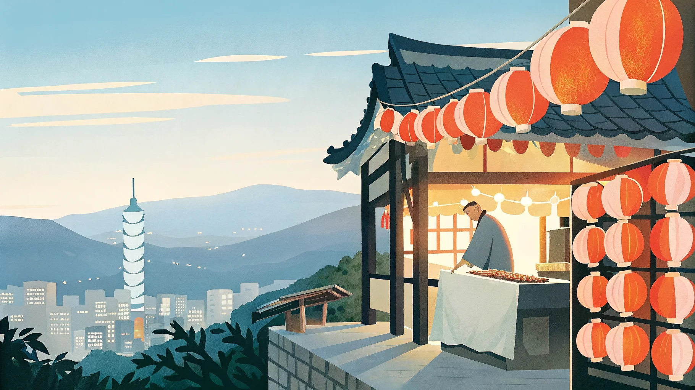

我要這個，謝謝。（ウォー ヤオ ジェイガ、シェシェ）
內用（ネイヨン／店内で）・外帶（ワイダイ／持ち帰り）
この画面を店員さんに見せてください

直行便3〜4時間・時差1時間の台湾は「短い休みでも成立する」のが最大の強み。初めてなら台北＋九份に絞った週末プラン、2回目以降や連休が取れるなら新幹線で西部を巡る縦断プランがおすすめ。それでも物足りない！という人向けに、少し難易度の高いプランも紹介しています。
台湾は新幹線・MRT・バスと交通網が優秀なので、初めてでも自力で動きやすい国。ただし詰め込みすぎは禁物で、夜市を楽しむ体力を残しておくのが台湾旅行のコツです。週末プランは台北連泊で身軽に、縦断プランは1都市1泊ずつ南下していきます。
台湾好きの間で憧れとして語られるのが、島をぐるっと一周する「環島（ホァンダオ）」。鉄道だけでも一周でき、西部の都市文化と東海岸の雄大な自然を一度に味わえます。ここでは鉄道環島の6泊7日モデルを紹介します。
台北と南部では雨の季節が異なります。旅の目的地に合わせてシーズンを選びましょう。